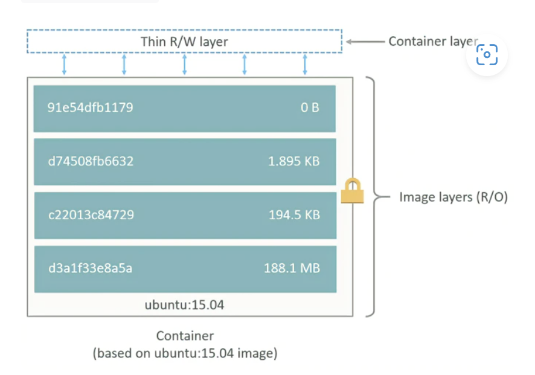
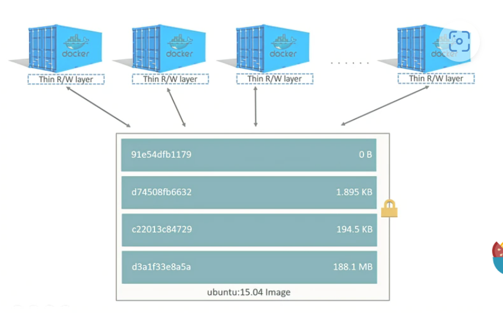
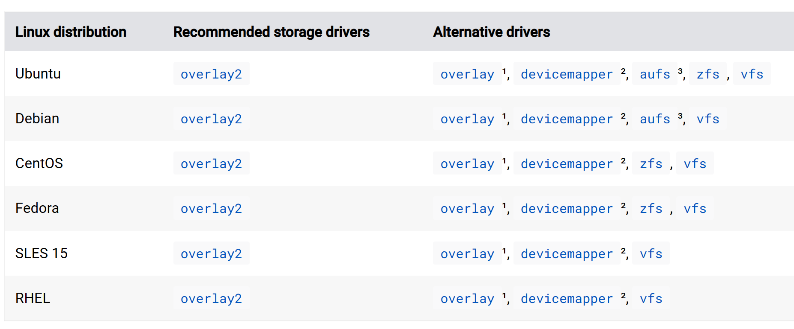
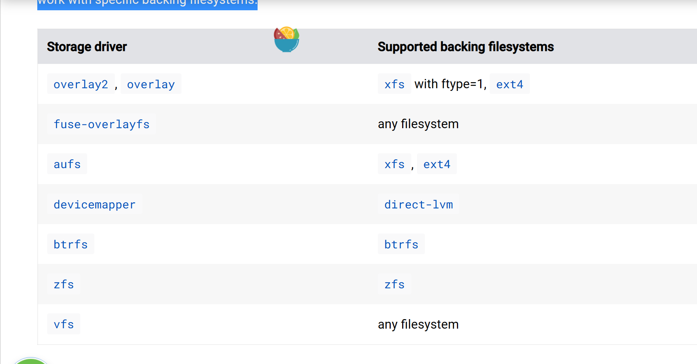
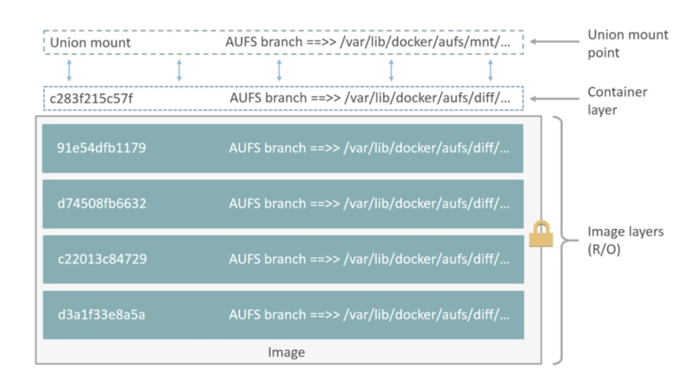
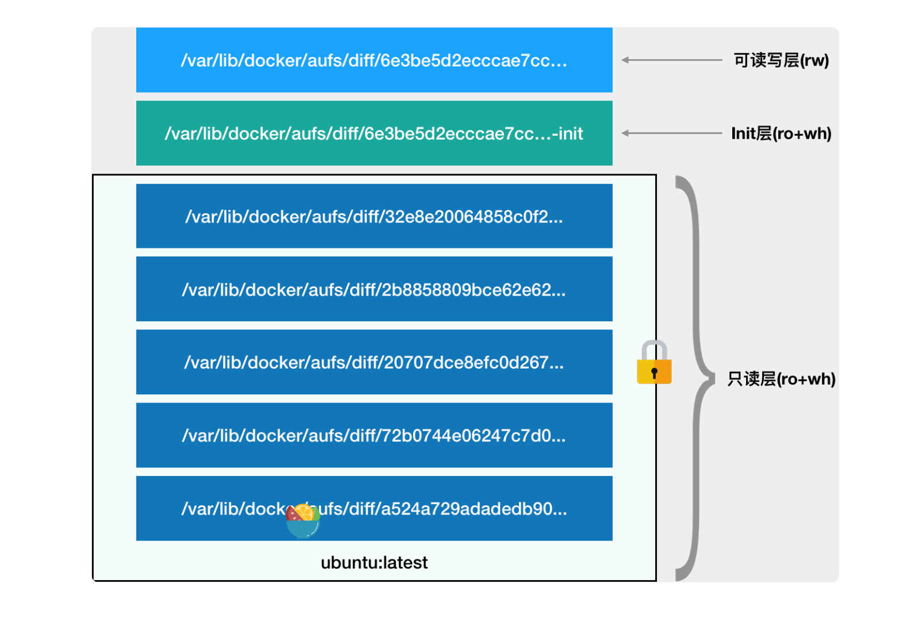
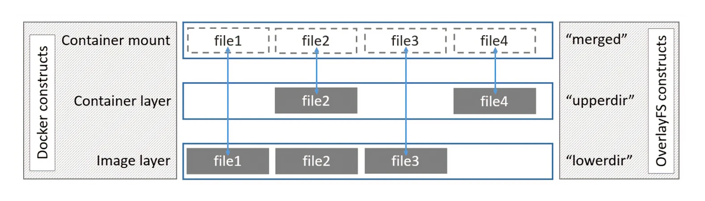
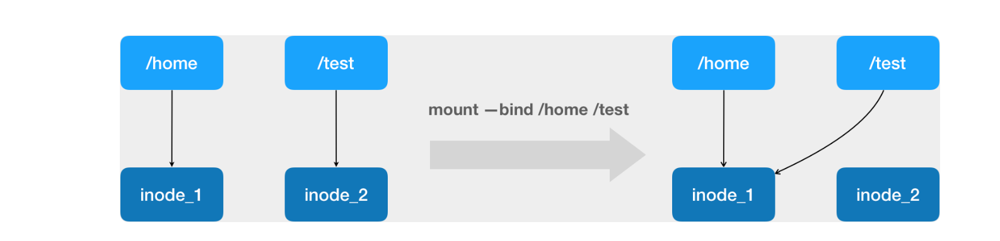

docker容器使用cgroups限制进程的资源使用，使用namespace修改进程视图。为进程的运行提供沙盒环境，不同容器中的进程互不干扰。
namespace技术
namespace是linux系统为进程提供的视图，隐藏了那些视图之外的所有内容，从而使其拥有自己运行的环境。这样可以确保进程无法看到或干扰其他进程： linux提供的namespace有
- Hostname
- Process IDs
- File System
- Network interfaces
- Inter-Process Communication (IPC)
以下命令开启一个容器，并在其中运行一个shell.其中busybox是该容器的镜像文件。 -t 参数表示给容器分配一个pesudo tty -i 表示将容器的STDIN关联到该tty 如果我们需要在容器中运行前台程序，这两个参数是必备的。 /bin/sh 就是我们要在 Docker 容器里运行的程序。
root@sypc:~# docker run -it busybox /bin/sh
通常，当我们在当前shell中运行另一个shell,子shell会直接使用父shell的终端。而在运行docker容器时，容器的父进程是containerd，所以需要参数告知containerd需要给容器配置新的终端。
root@sypc:~# docker run -it busybox /bin/sh
/ # ps
PID USER TIME COMMAND
1 root 0:00 /bin/sh
7 root 0:00 ps
可以看到，在当前容器中，1号进程变成了/bin/sh, 这是PID namespace隔离的效果。
linux系统在创建进程时，使用的是clone系统调用
int clone(int (*fn)(void *), void *stack, int flags, void *arg, .../* pid_t *parent_tid, void *tls, pid_t *child_tid */ );
flags参数中可以给子进程设定一系列新的namespace,比如pid namespace
int pid = clone(main_function, stack, CLONE_NEWPID | SIGCHLD, NULL);
这时，新创建的这个进程在这个pid namespace中的pid是1，而在全局的pid namespace中，进程号该是多少还是多少
而除了我们刚刚用到的 PID Namespace，Linux 操作系统还提供了 Mount、UTS、IPC、Network 和 User 这些 Namespace，用来对各种不同的进程上下文进行“障眼法”操作。
比如，Mount Namespace，用于让被隔离进程只看到当前 Namespace 里的挂载点信息；Network Namespace，用于让被隔离进程看到当前 Namespace 里的网络设备和配置。
Namespace 技术实际上修改了应用进程看待整个计算机“视图”，即它的“视线”被操作系统做了限制，只能“看到”某些指定的内容。但对于宿主机来说，这些被“隔离”了的进程跟其他进程并没有太大区别。
我们可以通过如下命令查找运行的docker进程在宿主机上的pid
root@sypc:~# docker inspect --format {{.State.Pid}} 416e26f1f881
1323
然后去/proc/1323/ns目录下查看该进程使用的所有namespace
root@sypc:~# cd /proc/1323/ns
root@sypc:/proc/1323/ns# ll
total 0
dr-x--x--x 2 root root 0 May 5 13:13 ./
dr-xr-xr-x 9 root root 0 May 5 13:13 ../
lrwxrwxrwx 1 root root 0 May 5 13:14 cgroup -> 'cgroup:[4026531835]'
lrwxrwxrwx 1 root root 0 May 5 13:14 ipc -> 'ipc:[4026532366]'
lrwxrwxrwx 1 root root 0 May 5 13:14 mnt -> 'mnt:[4026532364]'
lrwxrwxrwx 1 root root 0 May 5 13:13 net -> 'net:[4026532368]'
lrwxrwxrwx 1 root root 0 May 5 13:14 pid -> 'pid:[4026532367]'
lrwxrwxrwx 1 root root 0 May 5 13:14 pid_for_children -> 'pid:[4026532367]'
lrwxrwxrwx 1 root root 0 May 5 13:14 time -> 'time:[4026531834]'
lrwxrwxrwx 1 root root 0 May 5 13:14 time_for_children -> 'time:[4026531834]'
lrwxrwxrwx 1 root root 0 May 5 13:14 user -> 'user:[4026531837]'
lrwxrwxrwx 1 root root 0 May 5 13:14 uts -> 'uts:[4026532365]'
知道了这些namespace,我们在运行另一个进程时，也可以给其添加同样的这些namespace，达到“进入”容器的目的，这就是docker exec的工作原理。
linux系统提供了setns系统调用，允许当前进程加入到某个namespace中
#define _GNU_SOURCE
#include <sched.h>
int setns(int fd, int nstype);
此外，在运行新的docker容器时，可以通过参数指定该容器需要加入的namespace, docker提供了如下几个参数
--network network Connect a container to a network
--uts string UTS namespace to use
--userns string User namespace to use
--pid string PID namespace to use
比如通过如下命令加入另一个容器的network namespace
root@sypc:/proc/1323/ns# docker run -it --network container:416e26f1f881 ubuntu /bin/sh
#
cgroup技术
Linux Cgroups 的全称是 Linux Control Group。它最主要的作用，就是限制一个进程组能够使用的资源上限，包括 CPU、内存、磁盘、网络带宽等等。
在 Linux 中，Cgroups 给用户暴露出来的操作接口是文件系统，即它以文件和目录的方式组织在操作系统的 /sys/fs/cgroup 路径下。
cgroup的实现，有v1和v2两个版本
v1版本的cgroup,所有的controllers/subsystems都单独挂载在某个目录下，如下可以看到当前系统中挂载的cgroup controllers：
$ mount -t cgroup
cpuset on /sys/fs/cgroup/cpuset type cgroup (rw,nosuid,nodev,noexec,relatime,cpuset)
cpu on /sys/fs/cgroup/cpu type cgroup (rw,nosuid,nodev,noexec,relatime,cpu)
cpuacct on /sys/fs/cgroup/cpuacct type cgroup (rw,nosuid,nodev,noexec,relatime,cpuacct)
blkio on /sys/fs/cgroup/blkio type cgroup (rw,nosuid,nodev,noexec,relatime,blkio)
memory on /sys/fs/cgroup/memory type cgroup (rw,nosuid,nodev,noexec,relatime,memory)
...
这些controllers有： cpuset：控制进程组使用的cpu core, numa node。 cpu: 控制进程组的cpu调度。 cpuacct:this subsystem generates automatic reports on CPU resources used by group tasks ....
这些子系统分别控制某种资源，或者对一组进程进行某种操作。具体可以执行的限制或操作，对应着子系统下的文件：
$ ls /sys/fs/cgroup/cpu
cgroup.clone_children cpu.cfs_period_us cpu.rt_period_us cpu.shares notify_on_release
cgroup.procs cpu.cfs_quota_us cpu.rt_runtime_us cpu.stat tasks
如果熟悉 Linux CPU 管理的话，你就会在它的输出里注意到 cfs_period 和 cfs_quota 这样的关键词。这两个参数需要组合使用，可以用来限制进程在长度为 cfs_period 的一段时间内，只能被分配到总量为 cfs_quota 的 CPU 时间。
比如如果需要对进程的cpu使用进行控制，首先需要知道或创建出该进程所属的控制组，当前cpu下没有创建控制组，我们需要创建一个新的控制组 container:
root@ubuntu:/sys/fs/cgroup/cpu$ mkdir container
root@ubuntu:/sys/fs/cgroup/cpu$ ls container/
cgroup.clone_children cpu.cfs_period_us cpu.rt_period_us cpu.shares notify_on_release
cgroup.procs cpu.cfs_quota_us cpu.rt_runtime_us cpu.stat tasks
创建控制组就是简单的创建一个目录，操作系统会自动在该目录下，生成资源控制文件
现在，我们在后台执行这样一条脚本：
$ while : ; do : ; done &
[1] 226
这个死循环会将cpu吃完，top结果如下
$ top
%Cpu0 :100.0 us, 0.0 sy, 0.0 ni, 0.0 id, 0.0 wa, 0.0 hi, 0.0 si, 0.0 st
而此时，我们可以通过查看 container 目录下的文件，看到 container 控制组里的 CPU quota 还没有任何限制（即：-1），CPU period 则是默认的 100 ms（100000 us）：
$ cat /sys/fs/cgroup/cpu/container/cpu.cfs_quota_us
-1
$ cat /sys/fs/cgroup/cpu/container/cpu.cfs_period_us
100000
接下来，我们可以通过修改这些文件的内容来设置限制。 比如，向 container 组里的 cfs_quota 文件写入 20 ms（20000 us）
$ echo 20000 > /sys/fs/cgroup/cpu/container/cpu.cfs_quota_us
它意味着在每 100 ms 的时间里，被该控制组限制的进程只能使用 20 ms 的 CPU 时间，也就是说这个进程只能使用到 20% 的 CPU算力。接下来，我们把被限制的进程的 PID(准确的说是Task/JobID,也就是GroupID) 写入 container 组里的 tasks 文件，上面的设置就会对该进程生效了：
$ echo 226 > /sys/fs/cgroup/cpu/container/tasks
$ top
%Cpu0 : 20.3 us, 0.0 sy, 0.0 ni, 79.7 id, 0.0 wa, 0.0 hi, 0.0 si, 0.0 st
需要注意的是，cfs_quota 的配置是对当前控制组的所有进程生效的，也就是所有进程在100000us时间段中，一共能消耗 20000us,如果当前控制组中有两个进程，则每个只能消耗10000us
而cgroup v2不再将每个controllers/subsystems单独挂在在某个目录下了，而是将所有的subsystems都联合挂在在同一个目录下
root@sypc:/sys/fs/cgroup# mount -t cgroup2
cgroup2 on /sys/fs/cgroup type cgroup2 (rw,nosuid,nodev,noexec,relatime,nsdelegate)
如果我们创建一个控制组，并进入该控制组查看资源限制文件：
root@sypc:/sys/fs/cgroup/tmp# ll
total 0
drwxr-xr-x 2 root root 0 Apr 27 10:59 ./
dr-xr-xr-x 11 root root 0 Apr 27 10:59 ../
-r--r--r-- 1 root root 0 Apr 27 10:59 cgroup.controllers
-r--r--r-- 1 root root 0 Apr 27 10:59 cgroup.events
-rw-r--r-- 1 root root 0 Apr 27 10:59 cgroup.freeze
--w------- 1 root root 0 Apr 27 10:59 cgroup.kill
-rw-r--r-- 1 root root 0 Apr 27 10:59 cgroup.max.depth
-rw-r--r-- 1 root root 0 Apr 27 10:59 cgroup.max.descendants
-rw-r--r-- 1 root root 0 Apr 27 10:59 cgroup.procs
-r--r--r-- 1 root root 0 Apr 27 10:59 cgroup.stat
-rw-r--r-- 1 root root 0 Apr 27 10:59 cgroup.subtree_control
-rw-r--r-- 1 root root 0 Apr 27 10:59 cgroup.threads
-rw-r--r-- 1 root root 0 Apr 27 10:59 cgroup.type
-rw-r--r-- 1 root root 0 Apr 27 10:59 cpu.idle
-rw-r--r-- 1 root root 0 Apr 27 10:59 cpu.max
-rw-r--r-- 1 root root 0 Apr 27 10:59 cpu.max.burst
-r--r--r-- 1 root root 0 Apr 27 10:59 cpu.stat
-rw-r--r-- 1 root root 0 Apr 27 10:59 cpu.weight
-rw-r--r-- 1 root root 0 Apr 27 10:59 cpu.weight.nice
-rw-r--r-- 1 root root 0 Apr 27 10:59 cpuset.cpus
-r--r--r-- 1 root root 0 Apr 27 10:59 cpuset.cpus.effective
-rw-r--r-- 1 root root 0 Apr 27 10:59 cpuset.cpus.partition
-rw-r--r-- 1 root root 0 Apr 27 10:59 cpuset.mems
-r--r--r-- 1 root root 0 Apr 27 10:59 cpuset.mems.effective
-r--r--r-- 1 root root 0 Apr 27 10:59 hugetlb.1GB.current
-r--r--r-- 1 root root 0 Apr 27 10:59 hugetlb.1GB.events
-r--r--r-- 1 root root 0 Apr 27 10:59 hugetlb.1GB.events.local
-rw-r--r-- 1 root root 0 Apr 27 10:59 hugetlb.1GB.max
-r--r--r-- 1 root root 0 Apr 27 10:59 hugetlb.1GB.rsvd.current
-rw-r--r-- 1 root root 0 Apr 27 10:59 hugetlb.1GB.rsvd.max
-r--r--r-- 1 root root 0 Apr 27 10:59 hugetlb.2MB.current
-r--r--r-- 1 root root 0 Apr 27 10:59 hugetlb.2MB.events
-r--r--r-- 1 root root 0 Apr 27 10:59 hugetlb.2MB.events.local
-rw-r--r-- 1 root root 0 Apr 27 10:59 hugetlb.2MB.max
-r--r--r-- 1 root root 0 Apr 27 10:59 hugetlb.2MB.rsvd.current
-rw-r--r-- 1 root root 0 Apr 27 10:59 hugetlb.2MB.rsvd.max
-r--r--r-- 1 root root 0 Apr 27 10:59 io.stat
-r--r--r-- 1 root root 0 Apr 27 10:59 memory.current
-r--r--r-- 1 root root 0 Apr 27 10:59 memory.events
-r--r--r-- 1 root root 0 Apr 27 10:59 memory.events.local
-rw-r--r-- 1 root root 0 Apr 27 10:59 memory.high
可以看到cpu,cpuset,memory等等控制文件都有。
可以给当前控制组中的进程提供资源控制的controllers/subsystems，可通过cgroup.controllers查看
root@sypc:/sys/fs/cgroup/docker# cat cgroup.controllers
cpuset cpu io memory hugetlb pids rdma misc
所以docker是如何使用cgroup做容器资源限制的？
我们创建一个容器如下：
root@sypc:~# docker run -it --name test1 ubuntu /bin/sh
#
可以看到在/sys/fs/cgroup/system.slice目录下多了一个docker-9a06b58a83eb5df4c2c5124ea8c13a0439ca59e898de69ade730e34b655570da.scope控制组，这个控制组就是给当前容器创建的,可以看到该控制组中的进程就是当前容器进程
124ea8c13a0439ca59e898de69ade730e34b655570da.scope# cat cgroup.procs
2059
root@sypc:~# ps -f -p 2059
UID PID PPID C STIME TTY TIME CMD
root 2059 2038 0 11:01 pts/0 00:00:00 /bin/sh
root@sypc:~# ps -f -p 2038
UID PID PPID C STIME TTY TIME CMD
root 2038 1 0 11:01 ? 00:00:00 /usr/bin/containerd-shim-runc-v2 -n
所以如果我们给该容器加上一些资源限制，比如如下
root@sypc:~# docker run -it --cpu-period 1000000 --cpu-quota 200000 ubuntu /bin/sh
#
则在system.slice目录下相应的控制组中，可以看到cpu资源限制的配置
root@sypc:/sys/fs/cgroup/system.slice/docker-7547213322a32ce4801e68c95435d85908471a6052257d724806c8afaed1d8e5.scope# cat cpu.max
200000 1000000
为什么控制组会创建在system.slice目录下？大概是因为docker的cgroup driver使用的是systemd吧
root@sypc:/sys/fs/cgroup/system.slice# docker info | grep Cgroup
Cgroup Driver: systemd
Cgroup Version: 2
容器镜像
当我们进入一个容器时，看到的文件系统，跟宿主机的文件系统不同。容器的文件系统，就是由容器镜像的挂载生成的。而负责容器文件系统隔离的实现，就是由mount namespace提供的。
mount namespace
#define _GNU_SOURCE
#include <sys/mount.h>
#include <sys/types.h>
#include <sys/wait.h>
#include <stdio.h>
#include <sched.h>
#include <signal.h>
#include <unistd.h>
#define STACK_SIZE (1024 * 1024)
static char container_stack[STACK_SIZE];
char* const container_args[] = {
"/bin/bash",
NULL
};
int container_main(void* arg)
{
printf("Container - inside the container!\n");
execv(container_args[0], container_args);
printf("Something's wrong!\n");
return 1;
}
int main()
{
printf("Parent - start a container!\n");
int container_pid = clone(container_main, container_stack+STACK_SIZE, CLONE_NEWNS | SIGCHLD , NULL);
waitpid(container_pid, NULL, 0);
printf("Parent - container stopped!\n");
return 0;
}
这段程序会clone一个子进程，并给该子进程设置了mount namespace,然后该子进程运行一个shell程序。 我们运行该程序：
root@sypc:~/test# ./a.out
Parent - start a container!
Container - inside the container!
root@sypc:~/test# ls
a.out mount.cc
root@sypc:~/test# mount -l
/dev/sdc on / type ext4 (rw,relatime,discard,errors=remount-ro,data=ordered)
rootfs on /init type rootfs (ro,size=3896712k,nr_inodes=974178)
none on /dev type devtmpfs (rw,nosuid,relatime,size=3896740k,nr_inodes=974185,mode=755)
devpts on /dev/pts type devpts (rw,nosuid,noexec,noatime,gid=5,mode=620,ptmxmode=000)
none on /dev/shm type tmpfs (rw,nosuid,nodev,noatime)
hugetlbfs on /dev/hugepages type hugetlbfs (rw,relatime,pagesize=2M)
mqueue on /dev/mqueue type mqueue (rw,nosuid,nodev,noexec,relatime)
sysfs on /sys type sysfs (rw,nosuid,nodev,noexec,noatime)
......
root@sypc:/# exit
exit
Parent - container stopped!
可以看到虽然子进程中使用了mount namespace,但是在子进程中还是能看到父进程的所有挂载点
如果我们在子进程中新增一个挂载点
int container_main(void* arg)
{
printf("Container - inside the container!\n");
mount("none", "/tmp", "tmpfs", 0, "");
execv(container_args[0], container_args);
printf("Something's wrong!\n");
return 1;
}
我们在/tmp处挂载了tmpfs文件系统,现在在容器中可以看到该挂载，/tmp目录中为空
root@sypc:~/test# mount -l | grep /tmp
none on /tmp/.X11-unix type tmpfs (ro,relatime)
none on /tmp type tmpfs (rw,relatime)
root@sypc:~/test# cd /tmp
root@sypc:/tmp# ls
root@sypc:/tmp#
而在宿主机中是看不到的,tmp目录中是有内容的
root@sypc:/tmp# mount -l | grep /tmp
none on /tmp/.X11-unix type tmpfs (ro,relatime)
root@sypc:/tmp# ls
snap-private-tmp
systemd-private-79a35752d30e42f1b4ad3e2d4bf82747-systemd-logind.service-uMXjO3
systemd-private-79a35752d30e42f1b4ad3e2d4bf82747-systemd-resolved.service-4WnQvx
这就是 Mount Namespace 跟其他 Namespace 的使用略有不同的地方：它对容器进程视图的改变，一定是伴随着挂载操作（mount）才能生效。
可是，作为一个普通用户，我们希望的是一个更友好的情况：每当创建一个新容器时，我希望容器进程看到的文件系统就是一个独立的隔离环境，而不是继承自宿主机的文件系统。怎么才能做到这一点呢？
不难想到，我们可以在容器进程启动之前重新挂载它的整个根目录“/”。而由于 Mount Namespace 的存在，这个挂载对宿主机不可见，所以容器进程就可以在里面随便折腾了。
当然，为了能够让容器的这个根目录看起来更“真实”，我们一般会在这个容器的根目录下挂载一个完整的操作系统的文件系统，比如 Ubuntu16.04 的 ISO。这样，在容器启动之后，我们在容器里通过执行 "ls /" 查看根目录下的内容，就是 Ubuntu 16.04 的所有目录和文件。
而这个挂载在容器根目录上、用来为容器进程提供隔离后执行环境的文件系统，就是所谓的“容器镜像”。它还有一个更为专业的名字，叫作：rootfs（根文件系统）。
所以，一个最常见的 rootfs，或者说容器镜像，会包括如下所示的一些目录和文件，比如 /bin，/etc，/proc 等等：
root@sypc:~# docker run -it ubuntu /bin/sh
# ls /
bin dev home lib32 libx32 mnt proc run srv tmp var
boot etc lib lib64 media opt root sbin sys usr
而你进入容器之后执行的 /bin/bash，就是 /bin 目录下的可执行文件，与宿主机的 /bin/bash 完全不同
所以，对 Docker 项目来说，它最核心的原理实际上就是为待创建的用户进程：
- 启用 Linux Namespace 配置；
- 设置指定的 Cgroups 参数；
- 切换进程的根目录。
一个 Docker 镜像由一系列层构建而成。每个层对应着构建镜像的 Dockerfile 中的一条指令。除了最后一个层以外，每个层都是只读的。考虑以下 Dockerfile：
# syntax=docker/dockerfile:1
FROM ubuntu:18.04
LABEL org.opencontainers.image.authors="org@example.com"
COPY . /app
RUN make /app
RUN rm -r $HOME/.cache
CMD python /app/app.py
这个 Dockerfile 包含六个命令。修改文件系统的命令会创建一个层。FROM 语句首先从 ubuntu:18.04 镜像创建了一个层。LABEL 命令只修改镜像的元数据，不会产生新的层。COPY 命令将一些文件从Docker client’s current directory 添加进来，这会创建一个新的层。第一个 RUN 命令使用 make 命令构建应用程序，并将结果写入新的层中。第二个 RUN 命令删除缓存目录，并将结果写入新的层中。最后，CMD 指示在容器内运行哪个命令，这只会修改镜像的元数据，不会产生新的层。
每个层中的内容，只是与之前一层的差异的集合。添加和删除文件都会创建新的层。在上面的示例中，$HOME/.cache目录被删除，但在更低的层中依然存在，并且虽然是删除命令，但镜像的总大小是增加的。
所有的层，以栈的方式堆叠在一起。 当创建一个容器时，会在之前所有的underlying layers之上创建一个可读写层，也叫作容器层。正在运行的容器所做的所有更改（例如编写新文件、修改现有文件和删除文件）都将写入这个可读写容器层。下图显示了基于ubuntu:15.04镜像的容器。

容器和镜像之间的主要区别在于顶部的可写层。添加新数据或修改现有数据的所有容器的写操作都存储在此可写层中。当删除容器时，可写层也会被删除，而底层镜像保持不变。
由于每个容器都有自己的可写容器层，并且所有更改都存储在该容器层中，因此多个容器可以共享同一底层镜像。下面的图示展示了多个容器共享相同Ubuntu 15.04镜像。

docker 的镜像是分层的,使用 storage driver来存储镜像层，并在容器的可写层中存储数据。容器的可写层在删除容器后不会持久存在，但适合于存储运行时生成的临时数据。storage driver的写入速度通常低于本地文件系统的写入速度，特别是对于使用copy-on-write storage driver 而言。对于诸如数据库等需要大量写入操作的应用性能会受影响，尤其是更改只读层中预先存在的数据。
使用Docker volumes来处理写入密集型数据、需要在容器生命周期之外持久存在的数据以及需要在多个容器之间共享的数据。
Docker 使用storage driver来管理镜像层和可写容器层的内容。每个storage driver的实现方式不同，但所有storage driver都使用可堆叠的镜像层和写时复制（CoW）策略。
当使用docker pull拉取镜像，或者在创建容器时，使用的镜像不在本地时，每个层都是单独拉下来的，并存储在Docker的本地存储区域中，通常位于Linux主机上的/var/lib/docker/。
docker pull ubuntu:18.04
18.04: Pulling from library/ubuntu
f476d66f5408: Pull complete
8882c27f669e: Pull complete
d9af21273955: Pull complete
f5029279ec12: Pull complete
Digest: sha256:ab6cb8de3ad7bb33e2534677f865008535427390b117d7939193f8d1a6613e34
Status: Downloaded newer image for ubuntu:18.04
Each of these layers is stored in its own directory inside the Docker host’s local storage area. To examine the layers on the filesystem, list the contents of /var/lib/docker/
ls /var/lib/docker/overlay2
16802227a96c24dcbeab5b37821e2b67a9f921749cd9a2e386d5a6d5bc6fc6d3
377d73dbb466e0bc7c9ee23166771b35ebdbe02ef17753d79fd3571d4ce659d7
3f02d96212b03e3383160d31d7c6aeca750d2d8a1879965b89fe8146594c453d
ec1ec45792908e90484f7e629330666e7eee599f08729c93890a7205a6ba35f5
l
The directory names do not correspond to the layer IDs.
现假设有如下两个Dockerfile
# syntax=docker/dockerfile:1
FROM alpine
RUN apk add --no-cache bash
这个dockerfile 构建的image叫做acme/my-base-image:1.0
# syntax=docker/dockerfile:1
FROM acme/my-base-image:1.0
COPY . /app
RUN chmod +x /app/hello.sh
CMD /app/hello.sh
这个Dockerfile在acme/my-base-image:1.0之上构建镜像acme/my-final-image:1.0
构建步骤如下
Make a new directory cow-test/ and change into it
Within
cow-test/, create a new file called hello.sh with the following contents:#!/usr/bin/env bash echo "Hello world"创建Dockerfile.base文件，包含第一个Dockerfile的内容
创建Dockerfile文件，包含第二个Dockerfile的内容
build acme/my-base-image:1.0
$ docker build -t acme/my-base-image:1.0 -f Dockerfile.base . [+] Building 36.4s (8/8) FINISHED => [internal] load build definition from Dockerfile.base 0.1s => => transferring dockerfile: 111B 0.0s => [internal] load .dockerignore 0.1s => => transferring context: 2B 0.0s => resolve image config for docker.io/docker/dockerfile:1 3.3s => docker-image://docker.io/docker/dockerfile:1@sha256:39b85bbfa7536a5feceb7372 2.1s => => resolve docker.io/docker/dockerfile:1@sha256:39b85bbfa7536a5feceb7372a081 0.0s => => sha256:39b85bbfa7536a5feceb7372a0817649ecb2724562a38360f4 8.40kB / 8.40kB 0.0s => => sha256:966d40f9ba8366e74c2fa353fc0bc7bbc167d2a0f3ad2420db8b9e 482B / 482B 0.0s => => sha256:dbdd11720762ad504260c66161c964e59eba06b95a7aa64a68 2.90kB / 2.90kB 0.0s => => sha256:a47ff7046597eea0123ea02817165350e3680f75000dc5d6 11.55MB / 11.55MB 1.7s => => extracting sha256:a47ff7046597eea0123ea02817165350e3680f75000dc5d69c9a310 0.3s => [internal] load metadata for docker.io/library/alpine:latest 5.2s => [1/2] FROM docker.io/library/alpine@sha256:124c7d2707904eea7431fffe91522a01e 1.1s => => resolve docker.io/library/alpine@sha256:124c7d2707904eea7431fffe91522a01e 0.0s => => sha256:f56be85fc22e46face30e2c3de3f7fe7c15f8fd7c4e5add29d 3.37MB / 3.37MB 0.8s => => sha256:124c7d2707904eea7431fffe91522a01e5a861a624ee31d033 1.64kB / 1.64kB 0.0s => => sha256:b6ca290b6b4cdcca5b3db3ffa338ee0285c11744b4a6abaa962774 528B / 528B 0.0s => => sha256:9ed4aefc74f6792b5a804d1d146fe4b4a2299147b0f50eaf2b 1.47kB / 1.47kB 0.0s => => extracting sha256:f56be85fc22e46face30e2c3de3f7fe7c15f8fd7c4e5add29d7f64b 0.2s => [2/2] RUN apk add --no-cache bash 24.3s => exporting to image 0.1s => => exporting layers 0.1s => => writing image sha256:08fee32b9815bd41d25c4d450b2444750fec3ee23802569e408c 0.0s => => naming to docker.io/acme/my-base-image:1.0 0.0sbuild second image
root@sypc:~/cow-test# docker build -t acme/my-final-image:1.0 -f Dockerfile . [+] Building 2.3s (10/10) FINISHED => [internal] load build definition from Dockerfile 0.0s => => transferring dockerfile: 151B 0.0s => [internal] load .dockerignore 0.0s => => transferring context: 2B 0.0s => resolve image config for docker.io/docker/dockerfile:1 0.9s => CACHED docker-image://docker.io/docker/dockerfile:1@sha256:39b85bbfa7536a5fe 0.0s => [internal] load metadata for docker.io/acme/my-base-image:1.0 0.0s => [1/3] FROM docker.io/acme/my-base-image:1.0 0.0s => [internal] load build context 0.1s => => transferring context: 340B 0.0s => [2/3] COPY . /app 0.1s => [3/3] RUN chmod +x /app/hello.sh 0.8s => exporting to image 0.1s => => exporting layers 0.1s => => writing image sha256:ac6403988ea21522aee365674fe93ce189038d63d5e55bb78bea 0.0s => => naming to docker.io/acme/my-final-image:1.0 0.0s检查者两个image的大小
root@sypc:~/cow-test# docker image ls | grep acme acme/my-final-image 1.0 ac6403988ea2 About a minute ago 9.29MB acme/my-base-image 1.0 08fee32b9815 4 minutes ago 9.29MBCheck out the history of each image: ``` root@sypc:~/cow-test# docker image history acme/my-base-image:1.0 IMAGE CREATED CREATED BY SIZE COMMENT 08fee32b9815 5 minutes ago RUN /bin/sh -c apk add --no-cache bash # bui… 2.24MB buildkit.dockerfile.v0
4 weeks ago /bin/sh -c #(nop) CMD ["/bin/sh"] 0B 4 weeks ago /bin/sh -c #(nop) ADD file:9a4f77dfaba7fd2aa… 7.05MB
root@sypc:~/cow-test# docker image history acme/my-final-image:1.0 IMAGE CREATED CREATED BY SIZE COMMENT ac6403988ea2 8 minutes ago CMD ["/bin/sh" "-c" "/app/hello.sh"] 0B buildkit.dockerfile.v0
Some steps do not have a size (0B), and are metadata-only changes, which do not produce an image layer and do not take up any size, other than the metadata itself.
The <missing> lines in the docker history output indicate that those steps were either built on another system and part of the alpine image that was pulled from Docker Hub, or were built with BuildKit as builder. Before BuildKit, the “classic” builder would produce a new “intermediate” image for each step for caching purposes, and the IMAGE column would show the ID of that image. BuildKit uses its own caching mechanism, and no longer requires intermediate images for caching. Refer to BuildKit to learn more about other enhancements made in BuildKit.
第一个镜像有2层，第二个镜像有4层
9. Check out the layers for each image
root@sypc:~/cow-test# docker image inspect --format "" acme/my-base-image:1.0 ["sha256:f1417ff83b319fbdae6dd9cd6d8c9c88002dcd75ecf6ec201c8c6894681cf2b5","sha256:19106f5e45cc748df7ce3cf6e862d8d557d4f87a3ad1b18d872b2c6a6569f1f8"]
```
root@sypc:~/cow-test# docker image inspect --format "{{json .RootFS.Layers}}" acme/my-final-image:1.0
["sha256:f1417ff83b319fbdae6dd9cd6d8c9c88002dcd75ecf6ec201c8c6894681cf2b5","sha256:19106f5e45cc748df7ce3cf6e862d8d557d4f87a3ad1b18d872b2c6a6569f1f8","sha256:7d0a16730acf3c70dd2348cd5dbcd03b35b3b002c39f83e612fb0c27ba3da64c","sha256:4736c6c4651be028dbc28a56c6e220767e06e0679ea0dfebf08b51cd7c21507c"]
这两个镜像的前两层是共享的。共享的镜像层在 /var/lib/docker中只存储一次。并且在push 和pull镜像时，共享的镜像层也只会push或者pull一次。镜像层的共享，可以减少存储和网络带宽资源。
当启动容器时，storage driver会在所有的镜像层之上添加一个可写容器层。容器对文件系统所做的任何更改都存储在此处。容器未更改的任何文件都不会复制到此可写层中。这意味着可写层尽可能小。
当修改容器中现有文件时，storage driver执行cow操作。具体的步骤取决于特定的storage driver。对于overlay2、overlay和aufs storage driver，cow操作遵循以下大致顺序：
- 搜索image layers以更新文件。该过程从最上一层开始，并逐个向下层搜索，直到基础层。When results are found, they are added to a cache to speed future operations.
- 对找到的第一个副本执行copy_up操作，将文件复制到容器的可写层。 所有修改均针对该文件副本进行，并且容器无法看到存在于较低层中只读副本。
- Btrfs、ZFS和其他驱动程序处理cow的方式不同。eed future operations.
需要注意的是，更改文件的元数据（例如更改文件权限或ownership也会执行copy_up operation，在可写层中增加新的副本。
For write-heavy applications, you should not store the data in the container. Applications, such as write-intensive database storage, are known to be problematic particularly when pre-existing data exists in the read-only layer.
Instead, use Docker volumes, which are independent of the running container, and designed to be efficient for I/O. In addition, volumes can be shared among containers and do not increase the size of your container’s writable layer.
copy_up操作可能会导致明显的性能开销。这种开销取决于使用哪个storage driver。大文件、许多层和deep directory trees 可以使影响更加明显。不过每次修改某个已经存在的文件，只有第一次会执行copy_up操作。
创建5个容器
root@sypc:~# docker run -dit --name my_container_1 acme/my-final-image:1.0 bash \
&& docker run -dit --name my_container_2 acme/my-final-image:1.0 bash \
&& docker run -dit --name my_container_3 acme/my-final-image:1.0 bash \
&& docker run -dit --name my_container_4 acme/my-final-image:1.0 bash \
&& docker run -dit --name my_container_5 acme/my-final-image:1.0 bash
81da72691d48afef931143aa8ec8633f008572e8c0e9a32d140349b585aa2980
82d342d706d4681ca4eb7e80477a0cd4e82108efff33ee098f2f4b00c95a83a1
339e646a4a7896f0fe7f7d100becfc5eab66742f568d1e7f28590ab3a3088e42
153546b1499e19ee33b3622ba0098b87229c3eb20114c3d4fab58c50a18b862e
7337f8d5180ce90be60887403471694b9ed6fd8ae87810012302cb4465396250
查看大小
root@sypc:~# docker ps --size --format "table {{.ID}}\t{{.Image}}\t{{.Names}}\t{{.Size}}" | grep my_container
7337f8d5180c acme/my-final-image:1.0 my_container_5 0B (virtual 9.29MB)
153546b1499e acme/my-final-image:1.0 my_container_4 0B (virtual 9.29MB)
339e646a4a78 acme/my-final-image:1.0 my_container_3 0B (virtual 9.29MB)
82d342d706d4 acme/my-final-image:1.0 my_container_2 0B (virtual 9.29MB)
81da72691d48 acme/my-final-image:1.0 my_container_1 0B (virtual 9.29MB)
size的值有两个，0B 和 virtual 9.29MB .第一个值表示该容器的可读写层占用的磁盘空间大小。 第二个值是该容器的只读层和可读写层共占用的磁盘空间大小。 以上这些容器，只读层都是同一个镜像，100%共享。 有些容器使用不同的镜像，但是可能这些镜像的某些层也是共享的。
执行如下脚本
for i in {1..3}; do docker exec my_container_$i sh -c 'printf hello > /out.txt'; done
往container1,2,3的可读写层写5个字节，再查看大小如下
root@sypc:~# docker ps --size --format "table {{.ID}}\t{{.Image}}\t{{.Names}}\t{{.Size}}" | grep my_container
7337f8d5180c acme/my-final-image:1.0 my_container_5 0B (virtual 9.29MB)
153546b1499e acme/my-final-image:1.0 my_container_4 0B (virtual 9.29MB)
339e646a4a78 acme/my-final-image:1.0 my_container_3 5B (virtual 9.29MB)
82d342d706d4 acme/my-final-image:1.0 my_container_2 5B (virtual 9.29MB)
81da72691d48 acme/my-final-image:1.0 my_container_1 5B (virtual 9.29MB)
这些写入只影响到容器的可写层，只读层不受影响
如果容器镜像没有采用分层结构， Docker had to make an entire copy of the underlying image stack each time it created a new container, container create time and disk space used would be significantly increased.
在最新的大多linux发行版中，都可以也应该使用overlay2作为docker的storage dirver.

但storage driver的选择，也需要考虑 backing filesystem. The backing filesystem is the filesystem where /var/lib/docker/ is located. Some storage drivers only work with specific backing filesystems.

Storage Driver: overlay2
Backing Filesystem: extfs
Supports d_type: true
Using metacopy: false
Native Overlay Diff: true
userxattr: false
aufs storage driver
aufs是overlay2之前被普遍采用的storage driver,我们先看这个storage driver是如何工作的
aufs是一个联合文件系统，它在某个目录下层叠多个目录，并将它们呈现为单个目录。在AUFS术语中，这些目录称为分支，在Docker术语中则称为层。这一层叠的过程被称为 联合挂载（union mount）
下面的图表显示了基于ubuntu:latest镜像的Docker容器。

每个镜像层和容器层都在Docker主机上表示为/var/lib/docker/中的子目录。联合挂载提供了所有层的统一视图。 目录名称不直接对应于层本身的ID
AUFS使用写时复制（Copy-on-Write，CoW）策略来最大化存储效率并尽量减少开销。
所有关于镜像和容器层的信息都存储在/var/lib/docker/aufs/的子目录中。
diff/: 每层的内容都存储在diff下的某个子目录中 layers/: 这个子目录中存储关于如何堆叠layers结构的元数据。每个镜像或者容器层，都对应着该目录下的一个文件，每个文件包含其下面所有layers的ID。 mnt/: 这个子目录下的文件表示挂载点，每个镜像或容器层对应一个，which are used to assemble and mount the unified filesystem for a container。对于镜像来说，镜像是只读的，其对应的目录下为空
如果开始运行一个容器，则/var/lib/docker/aufs/的内容会有如下的变化
diff/: 创建容器可写层，所有的写操作在这里生效 layers/: 创建容器可写层对应的子目录，其中存储这个可写层的metadata, 包括parent layers IDs mnt/: 每个正在运行的容器的unified filesystem的挂载点，与从容器内部看到的文件系统完全相同。
当我们查看某个aufs的挂载信息
$ cat /proc/mounts| grep aufs
none /var/lib/docker/aufs/mnt/6e3be5d2ecccae7cc0fc... aufs rw,relatime,si=972c6d361e6b32ba,dio,dirperm1 0 0
可以看到一个si ID，然后使用这个 ID，你就可以在 /sys/fs/aufs 下查看被联合挂载在一起的各个层的信息：
$ cat /sys/fs/aufs/si_972c6d361e6b32ba/br[0-9]*
/var/lib/docker/aufs/diff/6e3be5d2ecccae7cc...=rw
/var/lib/docker/aufs/diff/6e3be5d2ecccae7cc...-init=ro+wh
/var/lib/docker/aufs/diff/32e8e20064858c0f2...=ro+wh
/var/lib/docker/aufs/diff/2b8858809bce62e62...=ro+wh
/var/lib/docker/aufs/diff/20707dce8efc0d267...=ro+wh
/var/lib/docker/aufs/diff/72b0744e06247c7d0...=ro+wh
/var/lib/docker/aufs/diff/a524a729adadedb90...=ro+wh
这里我们看到还有个init层，夹在容器层和镜像层之间。Init 层是 Docker 项目单独生成的一个内部层，专门用来存放 /etc/hosts、/etc/resolv.conf 等信息。需要这样一层的原因是，这些文件本来属于只读的 Ubuntu 镜像的一部分，但是用户往往需要在启动容器时写入一些指定的值，比如 hostname，如果在容器层对其进行修改， 在docker commit 时，这些信息会连同可读写层一起提交掉。但通常这些修改只对当前容器有效，所以单独使用init层记录这些修改，在docker commit时，只会提交最上面的容器层。
所以，完整的容器rootfs的层级结构应该如下

读操作 Consider three scenarios where a container opens a file for read access with aufs.
The file does not exist in the container layer: If a container opens a file for read access and the file does not already exist in the container layer, the storage driver searches for the file in the image layers, starting with the layer just below the container layer. It is read from the layer where it is found.
The file only exists in the container layer: If a container opens a file for read access and the file exists in the container layer, it is read from there.
The file exists in both the container layer and the image layer: If a container opens a file for read access and the file exists in the container layer and one or more image layers, the file is read from the container layer. Files in the container layer obscure files with the same name in the image layers.
写操作 Consider some scenarios where files in a container are modified.
第一次对已存在的文件执行写操作，该文件在容器层中不存在。aufs需要执行copy_up操作，将文件从存在的镜像层复制到可写的容器层。然后容器对复制的文件执行写操作。 但是，AUFS工作在文件级别而不是块级别。这意味着所有copy_up操作都会复制整个文件，即使该文件非常大且只修改了其中很小的一部分也是如此。这可能会对容器写性能产生明显影响。 同时，在搜索文件时，如果需要搜索的层数过多，AUFS可能会遇到明显延迟。 但值得注意的是，copy_up操作仅在首次写文件时会发生。对同一文件进行后续的写操作，不会再copy_up。
删除文件：当在容器内删除一个文件时，在容器层创建一个whiteout file。镜像层中该文件不会被删除（因为镜像层为只读） .However, the whiteout file prevents it from being available to the container.
当在容器内删除目录时，创建opaque file。这与whiteout file原理相同，有效地防止访问该目录，即使它仍然存在于镜像层中。
重命名目录：在AUFS上调用rename以重命名目录不被完全支持。即使源路径和目标路径都在同一AUFS层上，除非该目录没有子目录，否则它会返回EXDEV（“不允许跨设备链接”）
overlay2
当我们使用docker pull ubuntu 下载ubuntu镜像时，会下载其5层的layers,这些layers存储在/var/lib/docker/overlay2目录下
ls -l /var/lib/docker/overlay2
total 24
drwx------ 5 root root 4096 Jun 20 07:36 223c2864175491657d238e2664251df13b63adb8d050924fd1bfcdb278b866f7
drwx------ 3 root root 4096 Jun 20 07:36 3a36935c9df35472229c57f4a27105a136f5e4dbef0f87905b2e506e494e348b
drwx------ 5 root root 4096 Jun 20 07:36 4e9fa83caff3e8f4cc83693fa407a4a9fac9573deaf481506c102d484dd1e6a1
drwx------ 5 root root 4096 Jun 20 07:36 e8876a226237217ec61c4baf238a32992291d059fdac95ed6303bdff3f59cff5
drwx------ 5 root root 4096 Jun 20 07:36 eca1e4e1694283e001f200a667bb3cb40853cf2d1b12c29feda7422fed78afed
drwx------ 2 root root 4096 Jun 20 07:36 l
最后的l中存储的是每层内容的符号链接.The new l (lowercase L) directory contains shortened layer identifiers as symbolic links. These identifiers are used to avoid hitting the page size limitation on arguments to the mount command.
ls -l /var/lib/docker/overlay2/l
total 20
lrwxrwxrwx 1 root root 72 Jun 20 07:36 6Y5IM2XC7TSNIJZZFLJCS6I4I4 -> ../3a36935c9df35472229c57f4a27105a136f5e4dbef0f87905b2e506e494e348b/diff
lrwxrwxrwx 1 root root 72 Jun 20 07:36 B3WWEFKBG3PLLV737KZFIASSW7 -> ../4e9fa83caff3e8f4cc83693fa407a4a9fac9573deaf481506c102d484dd1e6a1/diff
lrwxrwxrwx 1 root root 72 Jun 20 07:36 JEYMODZYFCZFYSDABYXD5MF6YO -> ../eca1e4e1694283e001f200a667bb3cb40853cf2d1b12c29feda7422fed78afed/diff
lrwxrwxrwx 1 root root 72 Jun 20 07:36 NFYKDW6APBCCUCTOUSYDH4DXAT -> ../223c2864175491657d238e2664251df13b63adb8d050924fd1bfcdb278b866f7/diff
lrwxrwxrwx 1 root root 72 Jun 20 07:36 UL2MW33MSE3Q5VYIKBRN4ZAGQP -> ../e8876a226237217ec61c4baf238a32992291d059fdac95ed6303bdff3f59cff5/diff
上面的5个镜像层中，最底下的镜像层对应的目录中包含如下内容， link file,其内容为这个镜像层的符号链接。 diff目录，其中为该层的内容。
ls /var/lib/docker/overlay2/3a36935c9df35472229c57f4a27105a136f5e4dbef0f87905b2e506e494e348b/
diff link
cat /var/lib/docker/overlay2/3a36935c9df35472229c57f4a27105a136f5e4dbef0f87905b2e506e494e348b/link
6Y5IM2XC7TSNIJZZFLJCS6I4I4
ls /var/lib/docker/overlay2/3a36935c9df35472229c57f4a27105a136f5e4dbef0f87905b2e506e494e348b/diff
bin boot dev etc home lib lib64 media mnt opt proc root run sbin srv sys tmp usr var
在往上的每层对应的目录中，包含一个lower文件，其中为其底层对应的符号链接.
ls /var/lib/docker/overlay2/223c2864175491657d238e2664251df13b63adb8d050924fd1bfcdb278b866f7
diff link lower
cat /var/lib/docker/overlay2/223c2864175491657d238e2664251df13b63adb8d050924fd1bfcdb278b866f7/lower
l/6Y5IM2XC7TSNIJZZFLJCS6I4I4
ls /var/lib/docker/overlay2/223c2864175491657d238e2664251df13b63adb8d050924fd1bfcdb278b866f7/diff/
etc sbin usr var
当我们运行一个容器时，可以看到overlay2的挂载信息
overlay on /var/lib/docker/overlay2/9186877cdf386d0a3b016149cf30c208f326dca307529e646afce5b3f83f5304/merged
type overlay (rw,relatime,
lowerdir=l/DJA75GUWHWG7EWICFYX54FIOVT:l/B3WWEFKBG3PLLV737KZFIASSW7:l/JEYMODZYFCZFYSDABYXD5MF6YO:l/UL2MW33MSE3Q5VYIKBRN4ZAGQP:l/NFYKDW6APBCCUCTOUSYDH4DXAT:l/6Y5IM2XC7TSNIJZZFLJCS6I4I4,
upperdir=9186877cdf386d0a3b016149cf30c208f326dca307529e646afce5b3f83f5304/diff,
workdir=9186877cdf386d0a3b016149cf30c208f326dca307529e646afce5b3f83f5304/work)
目录
/var/lib/docker/overlay2/9186877cdf386d0a3b016149cf30c208f326dca307529e646afce5b3f83f5304是为当前容器创建的，其中lowerdir为所有镜像层链接。我们看到一共有6个，除了ubuntu的5个镜像层之外，还有一个init层。 upperdir对应着容器层，为可写的。最后的mergedir,是lowerdir和upperdir叠加的目录，就是容器内看到的文件系统。
综上，我们知道OverlayFS只叠加2层目录，底层叫做lowerdir,上层叫做upperdir，并将它们呈现为一个单一的目录。
下面的图示展示了Docker镜像和Docker容器如何分层。镜像层是lowerdir，容器层是upperdir。统一视图通过名为merged的目录公开，该目录实际上是容器挂载点。该图显示了Docker构造如何映射到OverlayFS构造中。

overlay2与aufs的读写操作原理相同，只不过overlay2只叠加2层目录，因此在向下层搜索文件时，会比aufs更快。
Volumn
Volume 机制，允许你将宿主机上指定的目录或者文件，挂载到容器里面进行读取和修改操作。
在 Docker 项目里，它支持两种 Volume 声明方式，可以把宿主机目录挂载进容器的 /test 目录当中：
$ docker run -v /test ...
$ docker run -v /home:/test ...
而这两种声明方式的本质，实际上是相同的：都是把一个宿主机的目录挂载进了容器的 /test 目录。只不过，在第一种情况下，由于你并没有显示声明宿主机目录，那么 Docker 就会默认在宿主机上创建一个临时目录 /var/lib/docker/volumes/[VOLUME_ID]/_data，然后把它挂载到容器的 /test 目录上。而在第二种情况下，Docker 就直接把宿主机的 /home 目录挂载到容器的 /test 目录上。
当容器进程被创建之后，尽管开启了 Mount Namespace，但是在它执行 chroot之前，容器进程一直可以看到宿主机上的整个文件系统。而宿主机上的文件系统，也自然包括了我们要使用的容器镜像。这个镜像的各个层，如果使用的是aufs storage driver,保存在 /var/lib/docker/aufs/diff 目录下，在容器进程启动后，它们会被联合挂载在 /var/lib/docker/aufs/mnt/ 目录中，这样容器所需的 rootfs 就准备好了。所以，我们只需要在 rootfs 准备好之后，在执行 chroot 之前，把 Volume 指定的宿主机目录（比如 /home 目录），挂载到指定的容器目录（比如 /test 目录）在宿主机上对应的目录（即 /var/lib/docker/aufs/mnt/layer ID/test）上，这个 Volume 的挂载工作就完成了。更重要的是，由于执行这个挂载操作时，“容器进程”已经创建了，也就意味着此时 Mount Namespace 已经开启了。所以，这个挂载事件只在这个容器里可见。你在宿主机上，是看不见容器内部的这个挂载点的。这就保证了容器的隔离性不会被 Volume 打破。注意：这里提到的"容器进程"，是 Docker 创建的一个容器初始化进程 (dockerinit)，而不是应用进程 (ENTRYPOINT + CMD)。dockerinit 会负责完成根目录的准备、挂载设备和目录、配置 hostname 等一系列需要在容器内进行的初始化操作。最后，它通过 execv() 系统调用，让应用进程取代自己，成为容器里的 PID=1 的进程。
而这里要使用到的挂载技术，就是 Linux 的绑定挂载（bind mount）机制。它的主要作用就是，允许你将一个目录或者文件，而不是整个设备，挂载到一个指定的目录上。并且，这时你在该挂载点上进行的任何操作，只是发生在被挂载的目录或者文件上，而原挂载点的内容则会被隐藏起来且不受影响。其实，如果你了解 Linux 内核的话，就会明白，绑定挂载实际上是一个 inode 替换的过程。

那么，这个 /test 目录里的内容，既然挂载在容器 rootfs 的可读写层，它会不会被 docker commit 提交掉呢？也不会。这个原因其实我们前面已经提到过。容器的镜像操作，比如 docker commit，都是发生在宿主机空间的。而由于 Mount Namespace 的隔离作用，宿主机并不知道这个绑定挂载的存在。所以，在宿主机看来，容器中可读写层的 /test 目录（/var/lib/docker/aufs/mnt/layer ID/test），始终是空的。
不过，由于 Docker 一开始还是要创建 /test 这个目录作为挂载点，所以执行了 docker commit 之后，你会发现新产生的镜像里，会多出来一个空的 /test 目录。毕竟，新建目录操作，又不是挂载操作，Mount Namespace 对它可起不到“障眼法”的作用。
下面验证一下，我的docker使用的storage driver是overlay2
#运行一个容器
root@sypc:~# docker run -v /test -it ubuntu /bin/sh
#查看volume在本机的目录
root@sypc:~# docker inspect 5f38f0514456 | grep volume
"Type": "volume",
"Source": "/var/lib/docker/volumes/1f30289cfe60eed61c13a4201a6d36208e8d6ce5992da74a5fbd909f36609216/_data",
#在volume中创建一个文件
$ touch /test/tmp
$ ls /test
tmp
#在宿主机对应的目录上可以看到创建的文件
root@sypc:~# cd /var/lib/docker/volumes/1f30289cfe60eed61c13a4201a6d36208e8d6ce5992da74a5fbd909f36609216/_data
root@sypc:/var/lib/docker/volumes/1f30289cfe60eed61c13a4201a6d36208e8d6ce5992da74a5fbd909f36609216/_data# ls
tmp
#我们查看该容器的镜像的挂载
root@sypc:~# docker inspect 5f38f0514456 --format {{.GraphDriver}}
{map[LowerDir:/var/lib/docker/overlay2/57e956b6e863e59f5cd80fa2afe982f4d433b77d9a4ed6e723adbd58ca6e3c88-init/diff:/var/lib/docker/overlay2/8f24547c3bdb6d9e966e883d7abb02ab90629cd1d8c89e1e11a66b3744a4bbd5/diff MergedDir:/var/lib/docker/overlay2/57e956b6e863e59f5cd80fa2afe982f4d433b77d9a4ed6e723adbd58ca6e3c88/merged UpperDir:/var/lib/docker/overlay2/57e956b6e863e59f5cd80fa2afe982f4d433b77d9a4ed6e723adbd58ca6e3c88/diff WorkDir:/var/lib/docker/overlay2/57e956b6e863e59f5cd80fa2afe982f4d433b77d9a4ed6e723adbd58ca6e3c88/work] overlay2}
#在MergeDir目录中，test为空
root@sypc:/var/lib/docker/overlay2/57e956b6e863e59f5cd80fa2afe982f4d433b77d9a4ed6e723adbd58ca6e3c88/merged# ls test
#事实上，test目录是创建在UpperDir中的，也就是容器的可写层中
root@sypc:/var/lib/docker/overlay2/57e956b6e863e59f5cd80fa2afe982f4d433b77d9a4ed6e723adbd58ca6e3c88/diff# ls
test tmp
#因为使用了mount namespace，所以test目录的挂载在宿主机中是不可见的，因此这里我们看到test目录下为空。
#可以确认，容器 Volume 里的信息，并不会被 docker commit 提交掉；但这个挂载点目录 /test 本身，则会出现在新的镜像当中。
总结 一个linux容器，实际上是一个由 Linux Namespace、Linux Cgroups 和 rootfs 三种技术构建出来的进程的隔离环境。 一个正在运行的 Linux 容器，其实可以被“一分为二”地看待：一组联合挂载在 /var/lib/docker/aufs/mnt 上的 rootfs，这一部分我们称为“容器镜像”（Container Image），是容器的静态视图；一个由 Namespace+Cgroups 构成的隔离环境，这一部分我们称为“容器运行时”（Container Runtime），是容器的动态视图。
temp1
docker容器的网络命名空间文件默认是创建在/var/run/docker/netns下的
root@node1:~# ls /var/run/docker/netns
060ca238cfd6 20f762a8795d 4f1e736408a5 default
#查看容器的网络空间
#1e7179c29da2 k8s.gcr.io/pause:3.5 "/pause" 10 days ago Up 10 days k8s_POD_kube-scheduler-node1_kube-system_......
#pod 中pause容器的网络空间。因为hostNetwork=true,所以使用主机网络空间。/var/run/docker/netns/default，这是主机的默认网络命名空间
#如果不是pause容器，那么下面的值为空，因为只有pause容器会创建一个新的网络命名空间，其它container都只是加入这个网络命名空间。
root@node1:~# docker inspect 1e7179c29da2 | grep SandboxKey
"SandboxKey": "/var/run/docker/netns/default",
只进入pod网络空间的简单方法
#先拿到容器pid
root@node1:~# kubectl describe pod hostnames-5f9c957df4-sxtk8
......
Node: node3/10.5.96.5
.....
Containers:
hostnames:
Container ID: docker://1057f2c2782d31b64ceea56edac830c712accc75e4fad8f8a955a374ff06d66a
......
#去相应节点inspect,拿到pid
root@node3:~# docker inspect 1057f2c2782d31b64ceea56edac830c712accc75e4fad8f8a955a374ff06d66a | grep Pid
"Pid": 3036053,
"PidMode": "",
"PidsLimit": null,
#创建pid的netns文件的软连接
root@node3:~# mkdir -p /var/run/netns/
root@node3:~# ln -s /proc/3036053/ns/net /var/run/netns/ns100
#进入network namespace 空间并查看网卡
root@node3:/proc/3036053/ns# nsenter --net=/var/run/netns/ns100
root@node3:/proc/3036053/ns# ip link
1: lo: <LOOPBACK,UP,LOWER_UP> mtu 65536 qdisc noqueue state UNKNOWN mode DEFAULT group default qlen 1000
link/loopback 00:00:00:00:00:00 brd 00:00:00:00:00:00
2: tunl0@NONE: <NOARP> mtu 1480 qdisc noop state DOWN mode DEFAULT group default qlen 1000
link/ipip 0.0.0.0 brd 0.0.0.0
4: eth0@if721: <BROADCAST,MULTICAST,UP,LOWER_UP> mtu 1430 qdisc noqueue state UP mode DEFAULT group default
link/ether 36:9b:d7:c5:7c:a6 brd ff:ff:ff:ff:ff:ff link-netnsid 0
#退出
root@node3:/proc/3036053/ns# exit
logout
这个小技巧在我们调试pod的网络时非常有用，很多镜像因为要保持体积尽量小，里面自带的工具很少，没有ping没有curl没有telnet，这时候用这个技巧先进入容器的网络空间，再执行命令就行了，因为只是切了网络命名空间，其它还在主机上，所以用的工具也全是主机的工具。
temp2
docker模拟一个pod并且pod网络能访问外网
#--net=none: This sets the networking of the container to "none", meaning it won't be able to access the external network or other containers.
root@node3:~# docker run -itd --name=pause --net=none busybox
5cd5f011614d02967d3908e1372e42b39e1b8e11bb99cbe366d70d03296fb6f9
root@node3:~# docker inspect pause|grep SandboxKey
"SandboxKey": "/var/run/docker/netns/4856e2c39050",
root@node3:~# docker run --name=nginx --network=container:pause -d nginx
3806c81cebb3f44cde96da0564802d6725ce09b7f7afbabd73d7a89ef38d8f62
root@node3:~# mkdir -p /var/run/netns
root@node3:/var/run/netns# ln -s /var/run/docker/netns/4856e2c39050 /var/run/netns/ns1
root@node3:/var/run/netns# ip netns exec ns1 curl localhost
<!DOCTYPE html>
<html>
<head>
.......
root@node3:/var/run/netns# ip netns exec ns1 ip addr
1: lo: <LOOPBACK,UP,LOWER_UP> mtu 65536 qdisc noqueue state UNKNOWN group default qlen 1000
link/loopback 00:00:00:00:00:00 brd 00:00:00:00:00:00
inet 127.0.0.1/8 scope host lo
valid_lft forever preferred_lft forever
2: tunl0@NONE: <NOARP> mtu 1480 qdisc noop state DOWN group default qlen 1000
link/ipip 0.0.0.0 brd 0.0.0.0
root@node3:/var/run/netns# ip netns exec ns1 ip route
root@node3:/var/run/netns# ip link add veth0 type veth peer name veth1
root@node3:/var/run/netns# ip link set veth0 netns ns1
root@node3:/var/run/netns# ip netns exec ns1 ip addr add 210.210.10.10/24 dev veth0
root@node3:/var/run/netns# ip netns exec ns1 ip link set veth0 up
root@node3:/var/run/netns# ip link set veth1 up
root@node3:/var/run/netns# ip route add 210.210.10.10 dev veth1 scope link
root@node3:/var/run/netns# echo 1 > /proc/sys/net/ipv4/conf/veth1/proxy_arp
root@node3:/var/run/netns# ip netns exec ns1 ip route add 0.0.0.0/0 via 169.254.10.24 dev veth0 onlink
root@node3:/var/run/netns# curl 210.210.10.10
<!DOCTYPE html>
<html>
<head>
<title>Welcome to nginx!</title>
<style>
html { color-scheme: light dark; }
body { width: 35em; margin: 0 auto;
font-family: Tahoma, Verdana, Arial, sans-serif; }
</style>
</head>
......
root@node3:/var/run/netns# echo 1 > /proc/sys/net/ipv4/ip_forward
root@node3:/var/run/netns# iptables -P FORWARD ACCEPT
root@node3:/var/run/netns# iptables -t nat -A POSTROUTING -s 210.210.10.10/32 -j MASQUERADE
root@node3:/var/run/netns# ip netns exec ns1 ping 8.8.8.8
PING 8.8.8.8 (8.8.8.8) 56(84) bytes of data.
64 bytes from 8.8.8.8: icmp_seq=1 ttl=58 time=0.416 ms
64 bytes from 8.8.8.8: icmp_seq=2 ttl=58 time=0.319 ms
^C